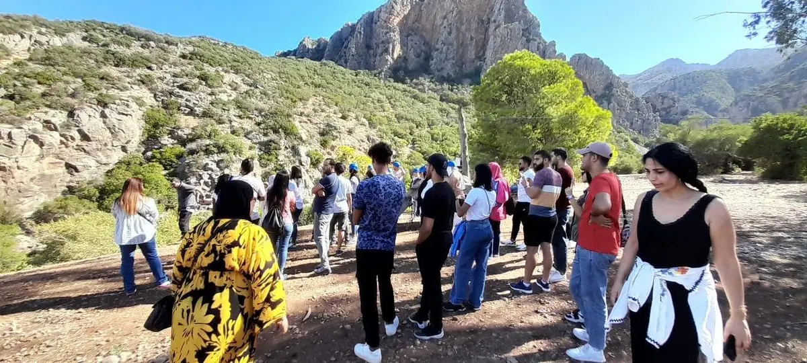
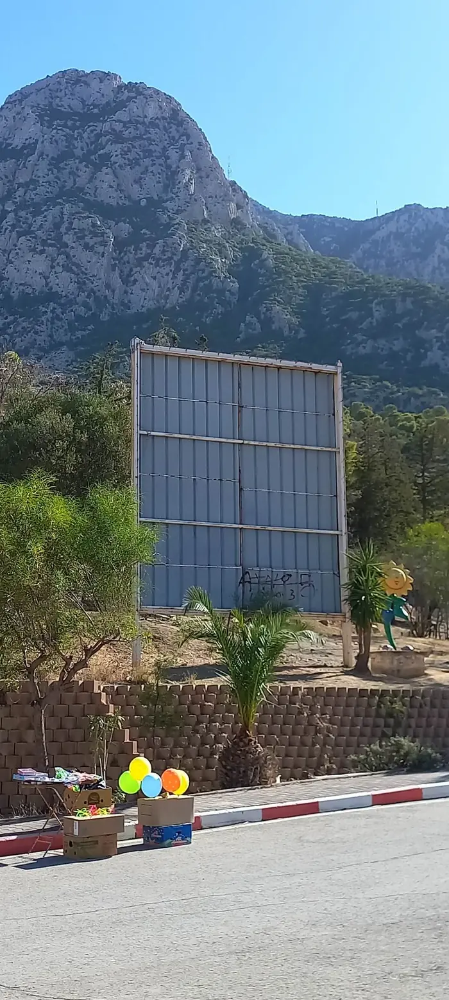
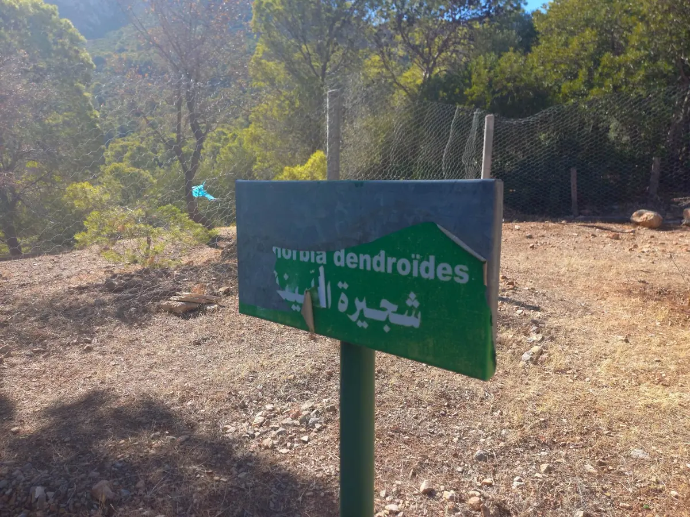
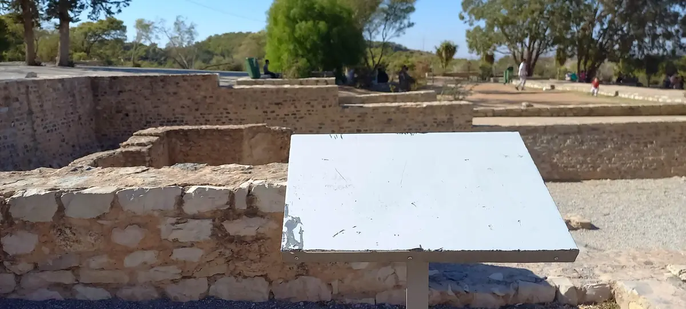
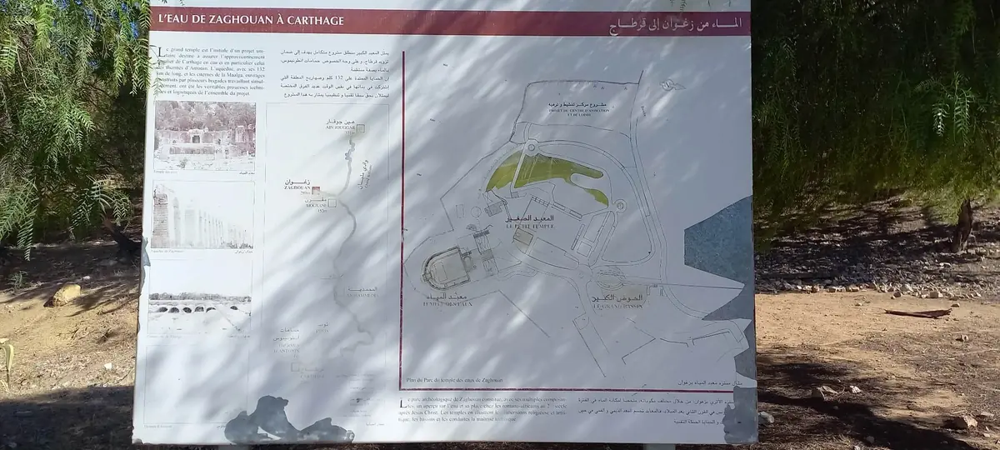
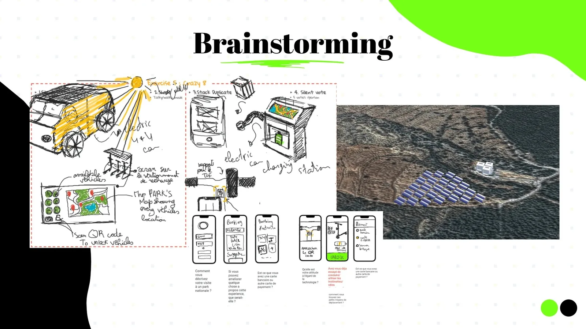
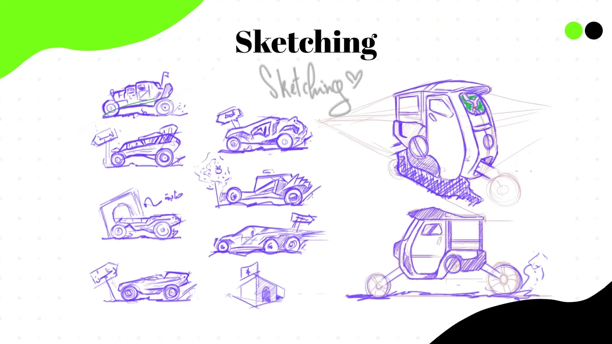
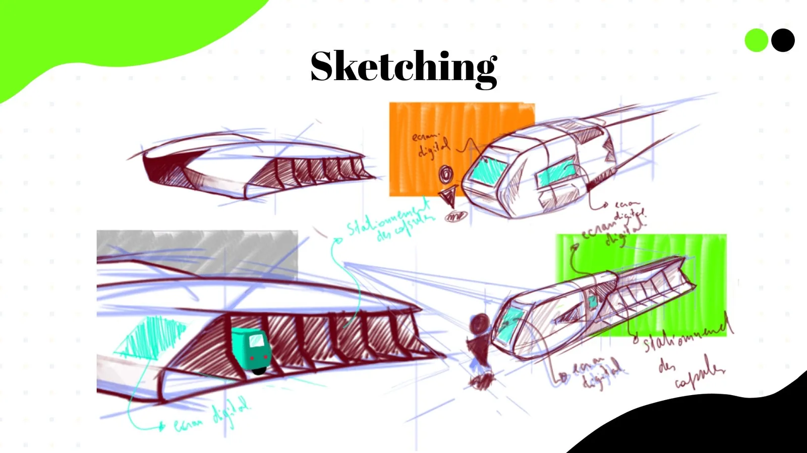
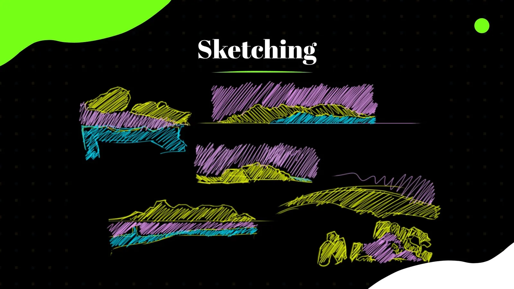
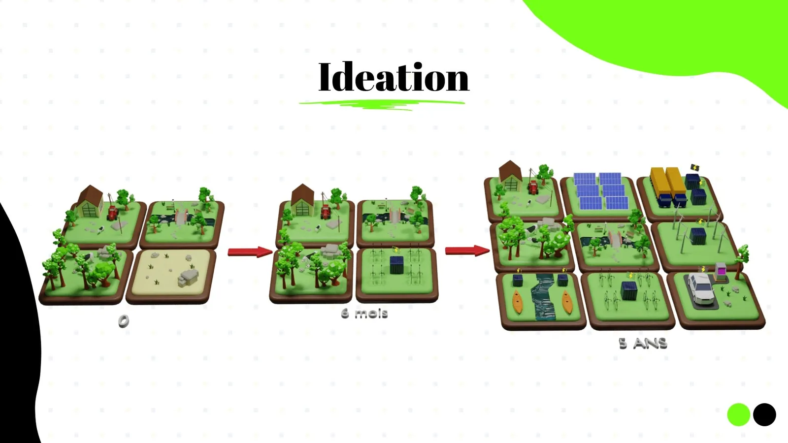

A park with everything.
Information with nothing.
Zaghouan sits at the foot of a mountain, next to a Roman water temple and the start of an aqueduct that once carried water to Carthage. It has trails, rare plants and history most Tunisians have never really seen. The project brief, set around the UN Sustainable Development Goals, asked how design could help people discover their own natural resources sustainably.
I didn't read about the problem. I went there.






information points I photographed that were blank, faded or torn
of Roman aqueduct starting here — a story visitors can't read on site
trail markers, path guides or digital tools for visitors
People come for the view and leave without knowing what they walked past — the history, the plants, the paths they never took.
Listening to visitors
I talked with local visitors in the park about how they experience it. What I heard, and what I saw myself, pointed to three gaps:
- Nobody knows where to go — there are no marked paths, distances or difficulty levels.
- Nobody knows what they're looking at — the history and nature have no voice on site.
- Exploring further is hard — the park is big, and there's no sustainable way to get around it.
How might we create a unique experience in national parks by connecting nature and technology — and making these spaces benefit — without damaging what makes them special?
My constraint from day one: whatever I added had to feel like part of the park, not something placed on top of it. Tunisia's strongest resources — sun and wind — would power the experience.
From observations
to concepts
I ran a structured ideation session — Crazy 8s, stacking duplicates and a silent vote — and drew interview questions straight onto paper wireframes, so ideas stayed tied to what visitors told me.

Three directions came out of it: eco-vehicles to explore further, renewable infrastructure to power them, and a companion app to guide and organise visitors. I decided they only work together — so BALIX became one connected service.
Designing the vehicle,
the space and the screens
My product design background let me go beyond the app: I sketched the vehicles visitors would ride, the stations where they dock and charge, and the landscape they move through.



Designed for today
and for five years from now
A park can't be transformed overnight. I modelled the rollout in Blender in three stages: today's park, a six-month first step with bike and scooter stations and battery storage, and a five-year ecosystem with solar panels, wind turbines, electric-vehicle charging, kayaking and cycling.

BALIX — the park's
missing guide
The app is the layer that replaces the blank boards. It welcomes visitors with the service's promise, lets them sign in quickly, and organises the park into paths on a real map — each with an average time and difficulty — before they book.
From ideation, the wider service also includes a live map of available vehicles at each station and QR-code unlocking — designed as concepts for the next iteration.
One service,
four layers.
BALIX isn’t an app with a park around it. It’s energy, infrastructure, vehicles and a digital guide that only work together — designed so a park authority can build it in phases.
The thinking behind
the choices
Why design a vehicle and infrastructure, not just an app?
Why make renewable energy the core constraint?
Why paths with time and difficulty?
Why a phased plan?
What I learned
Research starts outside
The most valuable hours were spent walking the park with a camera. Being physically there showed me problems no desk research would have surfaced.
Systems over screens
BALIX only made sense as a service: vehicle, energy, stations and app working together.
Sustainability as a constraint
Making it a rule, not a feature, led to better and more honest decisions throughout.
Next time
I'd test the path-selection flow with visitors on site and take the QR unlock and vehicle map from concept to tested screens.